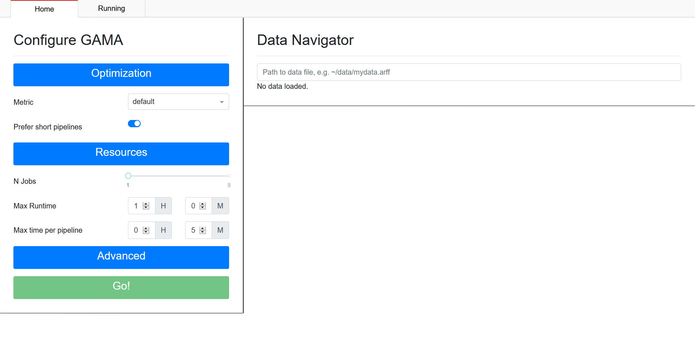
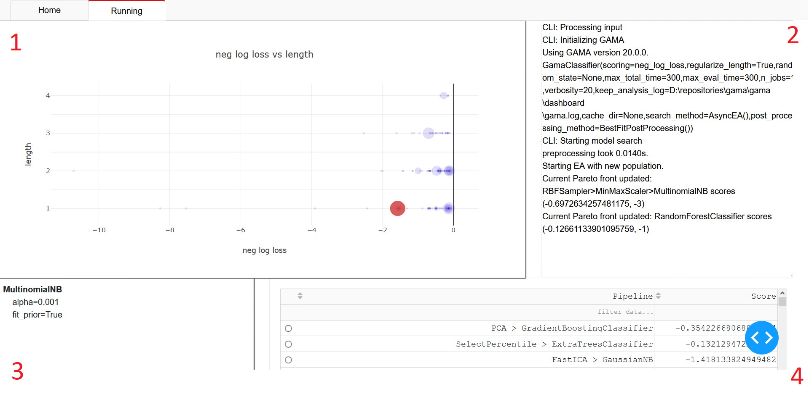

Dashboard¶
Note
The GAMA Dashboard is not done. However, it is functional and released to get some early feedback on what users would like to see included. The near future may see a reimplementation, see #97.
GAMA Dashboard is a graphical user interface to start and monitor the AutoML search. It is available when GAMA has been installed with its visualization optional dependencies (pip install gama[vis]). To start GAMA Dashboard call gamadash from the command line.
Home tab¶
Starting GAMA Dashboard will open a new tab in your webbrowser which will show the GAMA Dashboard Home page:
On the left you can configure GAMA, on the right you can select the dataset you want to perform AutoML on. To provide a dataset, specify the path to the csv or ARFF-file which contains your data. Once the dataset has been set, the Go!-button on the bottom left will be enabled. When you are satisfied with your chosen configuration, press the Go!-button to start GAMA. This will take you to the ‘Running’ tab.
Running tab¶
The running tab will look similar to this:
You see four main components on this page:
A visualization of search results. In this scatter plot, each scored pipeline is represented by a marker. The larger markers represent the most recent evaluations. Their location is determined by the pipeline’s length (on the y-axis) and score (on the x-axis). You can hover over the markers to get precise scores, and click on the pipeline to select it. A selected pipeline is represented with a large red marker.
Output of the search command. This field provides a textual progress report on GAMA’s AutoML process.
Full specification of the selected pipeline. This view of the selected pipeline specifies hyperparametersettings for each step in the pipeline.
A table of each evaluated pipeline. Similar to the plot (1), here you find all pipelines evaluated during search. It is possible to sort and filter based on performance.
Selecting a pipeline in the table or through the plot will update the other components.
Analysis tab¶
The analysis tab is also available if you did not start a new GAMA run. On this tab, you can visualize search results from logs.

Clicking ‘Select or drop log(s)’ in the top-right corner opens a file explorer which lets you select file(s) to load. Select both the ‘gama.log’ and ‘evaluation.log’ files from your directory together. For example the the logs found here. After loading the files, you can toggle its visualization by clicking the checkbox that appears next to the file name. The first visualization you will see is the best obtained score as a function of the number of evaluated pipelines:

In the top right you will find a dropdown ‘Visualization Presets’ which allow you to see other visualizations. Below you will find a description of each preset.
Visualization presets include:
#Pipeline by learner A bar chart of the number of times each estimator is used as the final step in a machine learning pipeline.
#Pipeline by size A bar chart of the distribution of the number of components per evaluated pipeline.
Best score over time The best score obtained by any individual pipeline at a given point in time.
Best score over iterations The best score obtained by any individual pipeline at a given iteration.
Size vs Metric A scatter plot where each pipeline is represented by a marker, gives an impression of the distribution of scores for evaluated pipelines of different lengths.
Evaluation Times A bar chart plotting the distribution of time required to evaluate pipelines during optimization.
Evaluations by Rung (ASHA only) A bar chart plotting the number of evaluations at each ASHA rung.
Time by Rung (ASHA only) A bar chart plotting the combined time used of all evaluations for each ASHA rung.